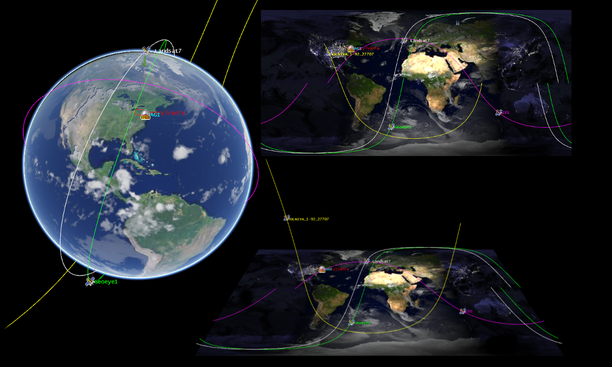

Cesium¶
A propos¶
Globes 3D et cartes 2D dans le navigateur¶
Cesium est une librairie JavaScript pour créer des globes 3D et des cartes 2D dans un navigateur web sans plugins. Il utilise WebGL pour les rendus matériels accélérés, et est multi-plateformes, multi-navigateurs et personnalisé pour la visualisation de données dynamiques.
{kind=link}
Caractéristiques principales¶
Visualisation géospatiale dynamique:
Créez des scènes dynamiques en fonction du temps, pilotées par les données avec CZML.
Visualise le relief mondial en haute résolution.
Dessine des couches d’imagerie en utilisant les standards WMS, TMS, OpenStreetMaps, Bing et Esri.
Dessine des données vecteur depuis du GeoJSON et du TopoJSON.
Dessine des modèles 3D en utilisant COLLADA et glTF.
Use plugins to extend Cesium.
Construit pour la performance et la précision:
WebGL optimisé avec du batching et le culling utilise efficacement l’accélération graphique matérielle.
Dessinez un large éventail de géométries, y compris des polylignes, des polygones, des panneaux d’affichage, des étiquettes, des extrusions et des corridors.
Utilisez des tuiles 3D pour diffuser, styliser et interagir avec des données 3D hétérogènes, incluant des modèles photogrammétriques, des bâtiments 3D , des intérieurs et extérieurs CAO ou BIM et des nuages de points.
Contrôle la caméra et crée des trajectoires de vol
Utilise des widgets standard pour contrôler le temps d’animation, sélectionner les couches d’images et zoomer sur un emplacement.
Une API, trois vues:
Cesium supporte un globe terrestre 3D, une carte 2D et une vue Columbus 2.5D avec la même API.
Standards implémentés¶
WMS et WMTS
Détails¶
Site web: https://cesium.com/
Licence: licence Apache 2.0
Version du logiciel: 1.80
Plates-formes supportées: Plateforme indépendant, dépend seulement d’un navigateur qui supporte WebGL
Community Support: Forum at https://community.cesium.com